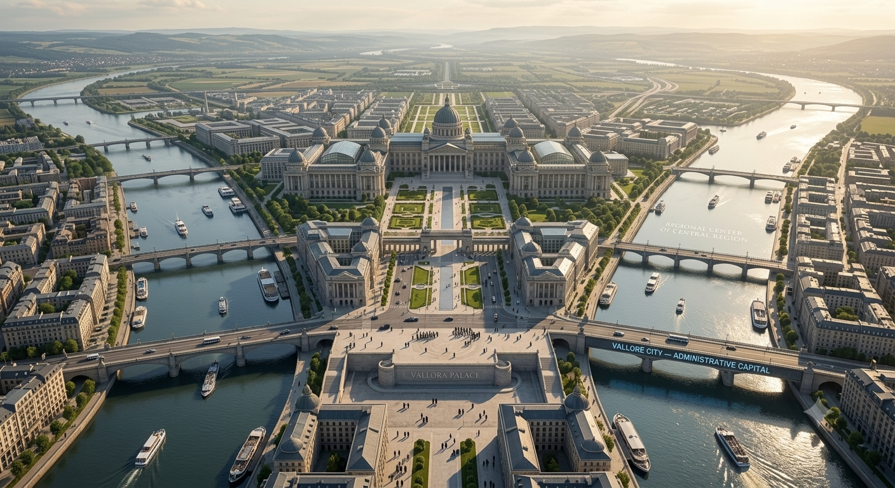
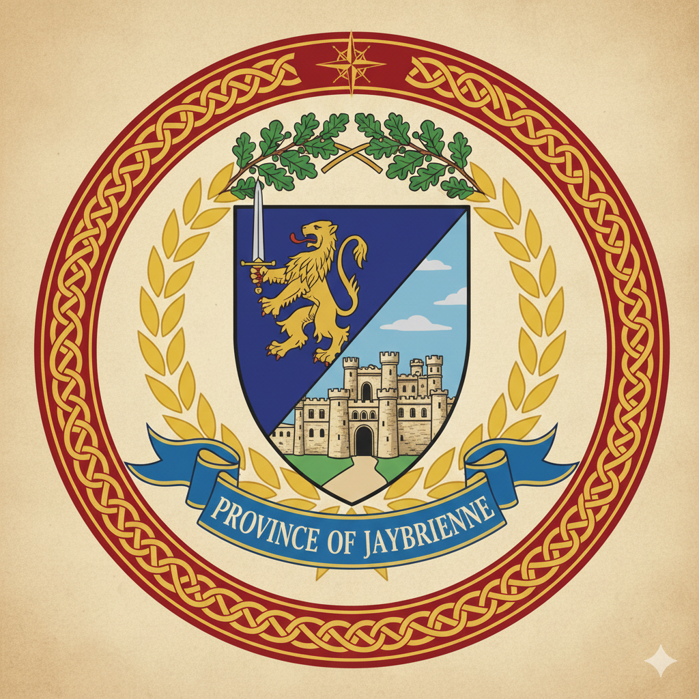

PROVINCE II
JAYBRIENNE
The Inland Breadbasket



REGION
Central
CAPITAL
Valloré City
AREA
18,342 km²
POPULATION
2,400,000
ROLE
Agricultural Core
Historical Record
Jaybrienne developed from ancient Brionne agricultural settlements organized around fertile river valleys and inland plains under Valtherium influence.
Stephen II's unification brought Jaybrienne into the Stephara political sphere. Its agricultural production became essential to maintaining Bristevia's armies.
During the wars of ERA 7 and ERA 8, Jaybrienne supplied grain, livestock and recruits. The Granary Roads, constructed during Stephen XIV's administrative reforms, connected the province with Stephara.
During ERA 11, Jaybrienne supplied food and refugee relief materials during the continental crisis.
Historical Importance:
Agricultural foundation of Bristevian state power.